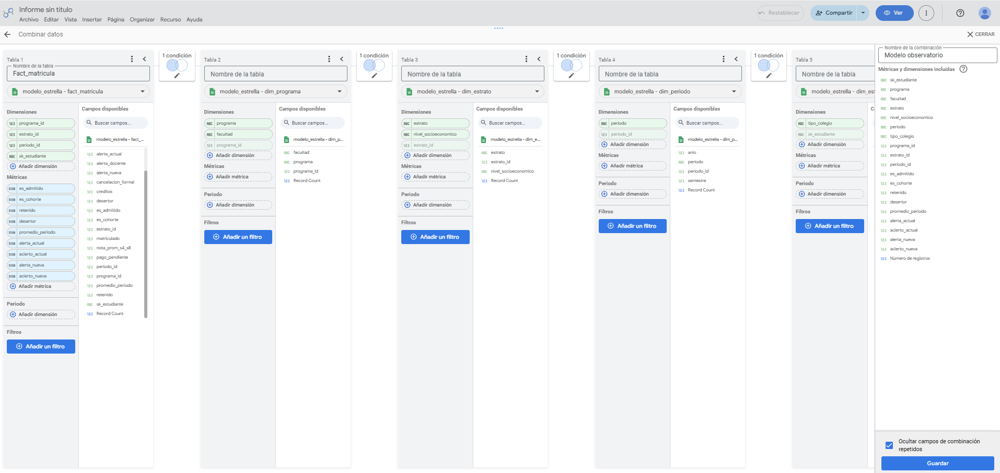

Reto 1. Proceso ETL
Limpiamos e integramos los cinco archivos originales con un proceso repetible en Python (Google Colab), que se vuelve a ejecutar sobre los CSV originales con un solo clic.
El proceso produce 1.200 estudiantes en la cohorte 2025-1 y se detiene automáticamente si el resultado es distinto.
Registro de transformaciones
| # | Problema | Regla aplicada | Etapa | Archivo | Filas afectadas |
|---|---|---|---|---|---|
| 1 | Los archivos traen BOM y pandas puede convertir documentos y notas a número | Leer con codificación utf-8-sig y todas las columnas como texto | Extracción | Todos | 24.370 |
| 2 | Documento con puntos de miles (ej. 1.000.902.633) | Quitar los puntos del documento | Transformación | sis_matriculas | 29 |
| 3 | Periodo escrito "2025-II" | Normalizar "2025-II" a "2025-2" | Transformación | sis_matriculas | 7 |
| 4 | Programa en mayúsculas o abreviado (ej. "ADMON EMPRESAS") | Llevar al nombre oficial con tabla de equivalencias | Transformación | sis_matriculas | 139 |
| 5 | Filas duplicadas del mismo estudiante en el mismo periodo | Conservar una sola fila por código y periodo | Transformación | sis_matriculas | 17 |
| 6 | Promedio con coma decimal (ej. "2,6") | Reemplazar la coma por punto | Transformación | sis_matriculas | 40 |
| 7 | Promedio sin separador decimal (ej. "36" en una escala de 0 a 5) | Dividir entre 10 los promedios mayores a 5 | Transformación | sis_matriculas | 13 |
| 8 | Transferencias que ingresan en 2025-2 mezcladas con la cohorte | Cohorte = periodo 2025-1 y tipo de ingreso "Nuevo"; se excluyen las transferencias | Transformación | sis_matriculas | 40 |
| 9 | Admitidos duplicados con el nombre en mayúsculas | Conservar un registro por documento (el de nombre en formato título) | Transformación | admisiones | 30 |
| 10 | Fechas de admisión en tres formatos (dd/mm/aaaa, dd-mes-aaaa, aaaa-mm-dd) | Convertir todas a aaaa-mm-dd | Transformación | admisiones | 1.052 |
| 11 | Documento con puntos de miles | Quitar los puntos del documento | Transformación | erp_pagos_2025_2 | 1.132 |
| 12 | Estado de pago sin estandarizar (PAGADO / Pagado) | Llevar el estado a formato título | Transformación | erp_pagos_2025_2 | 50 |
| 13 | Bienestar no trae documento y hay homónimos (mismo nombre en dos programas) | Cruzar contra admisiones por nombre normalizado (mayúsculas, sin tildes) y programa | Transformación | bienestar_registros_2025_1 | 276 |
| 14 | Bienestar tiene una fila por atención: un estudiante puede aparecer varias veces | Resumir en una fila por estudiante con indicadores 0/1 por tipo de registro | Transformación | bienestar_registros_2025_1 | 36 |
| 15 | Correos institucionales compartidos por dos estudiantes (ej. manuel.osorio94@) | Asignar el código a cada bloque de 16 semanas según el orden por código; se valida que el correo coincida en el 100 % de las filas | Transformación | moodle_actividad_2025_1 | 4 |
| 16 | Nota parcial en escala de 0 a 100 y solo en las semanas 4, 8, 12 y 16 | Convertir a escala de 0 a 5 (dividir entre 20) | Transformación | moodle_actividad_2025_1 | 4.800 |
| 17 | Datos personales y sensibles (documento, correo, nombre, atenciones psicológicas) | Publicar la tabla con una clave sustituta, sin datos de identificación ni atenciones psicológicas | Carga | cohorte_limpia.csv | 1.200 |
Para Bienestar, que no trae documento, cruzamos cada registro con admisiones por nombre normalizado y programa. Así resolvemos los homónimos: en admisiones hay dos estudiantes llamados Diana Agudelo López, en Psicología y en Trabajo Social, y el programa evita asignar un registro a la persona equivocada. Los 276 registros de Bienestar cruzaron sin ambigüedad.
La tabla publicada está anonimizada: usa una clave sustituta (sk_estudiante) y no incluye documento, código, correo, nombre ni atenciones psicológicas.
Reto 2. Modelo dimensional
Granularidad: una fila por estudiante admitido por periodo (2025-1 y 2025-2). Incluimos a los 1.450 admitidos, y no solo a la cohorte, para que la absorción se pueda filtrar por programa, facultad y estrato igual que los demás indicadores.
Medidas de la tabla de hechos
| Medida | Cálculo | ¿Aditiva? |
|---|---|---|
| Admitidos, estudiantes de la cohorte, matriculados, retenidos, desertores | Suma de indicadores 0/1 | Sí |
| Alertados y aciertos de la alerta (regla actual y nueva) | Suma de indicadores 0/1 | Sí |
| Cancelaciones formales, alertas docentes, pagos pendientes | Suma de indicadores 0/1 | Sí |
| Absorción | suma(es_cohorte) ÷ suma(es_admitido) | No: es una razón |
| Retención y deserción | suma(retenido o desertor) ÷ suma(es_cohorte) | No: es una razón |
| Promedio de la cohorte | Promedio de promedio_periodo | No: es un promedio |
| Precisión y cobertura de la alerta | suma(aciertos) ÷ suma(alertados o desertores) | No: son razones |
Dimensiones
- dim_estudiante: clave sustituta, tipo de colegio, puntaje Saber 11 y fecha de admisión.
- dim_programa: programa y facultad. Permite filtrar por programa y por facultad.
- dim_estrato: estrato y nivel socioeconómico. Permite filtrar por estrato.
- dim_periodo: periodo, año y semestre.

Reto 3. Arquitectura objetivo
El Observatorio combina un data lake por zonas, un lakehouse en BigQuery, ingesta por lotes y en streaming, y un canal de alertas casi en tiempo real.
Frecuencia de cada flujo
| Flujo | Tipo | Frecuencia |
|---|---|---|
| SIS académico, ERP financiero y Bienestar → zona Bronce | Lotes | Diaria (2:00 a. m.) |
| Admisiones → zona Bronce | Lotes | Diaria durante el periodo de admisión; semestral el resto del año |
| Moodle (accesos y notas) → zona Bronce y canal de alertas | Streaming | Casi en tiempo real (micro-lotes cada 5 minutos) |
| SPADIES, ICFES y DANE → zona Bronce | Lotes | Semestral o según publicación de cada fuente |
| Bronce → Plata → Oro → BigQuery | Lotes | Diaria, después de la ingesta |
| Tablero de Looker Studio | Consulta | Actualización de datos cada 12 horas |
| Lista de alerta temprana a consejeros | Lotes y eventos | Semanal (lunes) y aviso inmediato ante una señal de riesgo |
Justificación de cada tecnología
| Tecnología | Por qué la elegimos |
|---|---|
| Cloud Storage (data lake) | Guarda los archivos originales sin límite de formato y separa las zonas Bronce, Plata y Oro con permisos distintos. |
| Cloud Composer + Cloud Run | Programa y ejecuta el mismo ETL en Python del Reto 1, sin servidores que mantener. |
| Pub/Sub + Dataflow | Recibe los eventos de Moodle a medida que ocurren y los procesa en streaming para detectar el riesgo a tiempo. |
| BigQuery (lakehouse) | Consulta tanto el lake como el modelo estrella con SQL, y se conecta de forma nativa con Looker Studio. |
| Vistas certificadas (capa semántica) | Definen una sola vez cada indicador oficial, para que todos los tableros calculen igual la deserción. |
| Looker Studio | Tablero gratuito, embebible en la página y con filtros de autoservicio para cada rol. |
| Correo y Google Chat (alertas) | Llevan la lista semanal y los avisos inmediatos a los consejeros, en las herramientas que ya usan. |
Reto 4. Tablero
Tablero de autoservicio con filtros por programa, facultad y estrato. Los indicadores usan las definiciones oficiales y un semáforo frente a la meta que definimos.
Metas y semáforo (cohorte completa, regla de alerta actual)
| Indicador | Valor | Meta | Estado |
|---|---|---|---|
| Absorción | 82,76 % | ≥ 85 % | Cerca de la meta |
| Retención de primer periodo | 85,42 % | ≥ 88 % | Cerca de la meta |
| Deserción (por programa en el tablero) | 14,58 % | ≤ 12 % | Cerca de la meta |
| Promedio de la cohorte | 3,38 | ≥ 3,5 | Cerca de la meta |
| Número de alertados | 371 | ≤ 120 (capacidad de consejería) | No cumple |
| Precisión de la alerta | 32,61 % | ≥ 50 % | No cumple |
| Cobertura de la alerta | 69,14 % | ≥ 35 % | Cumple |
El semáforo es verde cuando se cumple la meta, ámbar cuando el valor está cerca y rojo cuando está lejos.
Deserción por programa
| Programa | Deserción |
|---|---|
| Administración de Empresas | 18,11 % |
| Ingeniería Informática | 16,53 % |
| Trabajo Social | 14,47 % |
| Contaduría Pública | 14,29 % |
| Ingeniería Industrial | 12,50 % |
| Psicología | 10,53 % |
Reto 5. Alerta temprana
La regla actual alerta a demasiados estudiantes para los 120 que pueden atender los consejeros. Diseñamos una regla nueva con la actividad de Moodle de las semanas 1 a 8.
Regla nueva: se alerta a un estudiante si suma 7 accesos o menos en las semanas 5 a 8, o si su nota parcial promedio (semanas 4 y 8, en escala de 0 a 5) es menor a 2,5 y suma 12 accesos o menos en esas mismas semanas.
Elegimos los accesos de las semanas 5 a 8 porque son la señal más fuerte de abandono: quienes desertaron entraron en promedio 12 veces en ese mes, frente a 22 de quienes volvieron. La nota baja solo alerta cuando además cae la actividad, para no saturar a los consejeros.
Regla actual
| Desertó | No desertó | |
|---|---|---|
| Alertó | 121 | 250 |
| No alertó | 54 | 775 |
Alertados: 371. Precisión: 32,61 %. Cobertura: 69,14 %.
Regla nueva
| Desertó | No desertó | |
|---|---|---|
| Alertó | 71 | 46 |
| No alertó | 104 | 979 |
Alertados: 117. Precisión: 60,68 %. Cobertura: 40,57 %.
La regla nueva cabe en la capacidad de consejería (117 de 120) y cumple la cobertura mínima del 35 %. Además, casi duplica la precisión: 6 de cada 10 alertados desertaron, frente a 3 de cada 10 con la regla actual. El costo es que deja de alertar a 50 desertores que la regla actual sí detectaba; por eso proponemos en el Reto 6 un modelo predictivo que mejore la cobertura sin superar los 120 cupos.
Reto 6. Prospectiva tecnológica
Tres tecnologías para la siguiente fase del Observatorio, cada una ligada a un problema real del caso y a un indicador del tablero.
| Tecnología | Problema del caso que resuelve | Indicador que mejora | Riesgo | Mitigación |
|---|---|---|---|---|
| Modelo predictivo de deserción (BigQuery ML) | Una regla de umbrales fijos deja sin alertar a 104 de los 175 desertores. | Cobertura de la alerta, manteniendo 120 alertados o menos | Sesgo contra estudiantes de estratos bajos o colegios oficiales, y decisiones difíciles de explicar. | Revisar la precisión por estrato y tipo de colegio cada semestre, usar variables explicables y que el consejero decida, no el modelo. |
| Control automático de calidad de datos (Dataplex Data Quality) | Los errores de origen cambian las cifras: 13 promedios sin separador decimal subían el promedio de la cohorte de 3,38 a 3,71. | Promedio de la cohorte y retención | Reglas demasiado estrictas que detengan la carga diaria por errores menores. | Clasificar las reglas en bloqueantes y de advertencia, y notificar al dueño de cada fuente. |
| Analítica conversacional (Gemini en Looker) | Los decanos dependen del equipo de datos para preguntas puntuales, como la deserción de un programa en un estrato. | Deserción por programa, consultada por cada facultad | Respuestas incorrectas si el asistente calcula los indicadores a su manera. | Permitir solo las métricas certificadas de la capa semántica y mostrar siempre la fórmula usada. |
Referencias
- Armbrust, M., Ghodsi, A., Xin, R., & Zaharia, M. (2021). Lakehouse: A new generation of open platforms that unify data warehousing and advanced analytics. Conference on Innovative Data Systems Research (CIDR). https://www.cidrdb.org/cidr2021/papers/cidr2021_paper17.pdf
- Congreso de la República de Colombia. (2012, 17 de octubre). Ley Estatutaria 1581 de 2012, por la cual se dictan disposiciones generales para la protección de datos personales. Diario Oficial No. 48.587.
- Fundación Universitaria Católica del Norte. (2026a). Elemento de competencia 2 [Material de clase]. Canvas. https://fucn.instructure.com/courses/30440/pages/elemento-de-competencia-2-2025-2
- Fundación Universitaria Católica del Norte. (2026b). Elemento de competencia 3 [Material de clase]. Canvas. https://fucn.instructure.com/courses/30440/pages/elemento-de-competencia-3-2025-2
- Kimball, R., & Ross, M. (2013). The data warehouse toolkit: The definitive guide to dimensional modeling (3.ª ed.). Wiley.
- Ministerio de Educación Nacional. (s. f.). Preguntas frecuentes SPADIES. https://www.mineducacion.gov.co/sistemasinfo/spadies/secciones/Ayuda/Preguntas-frecuentes/